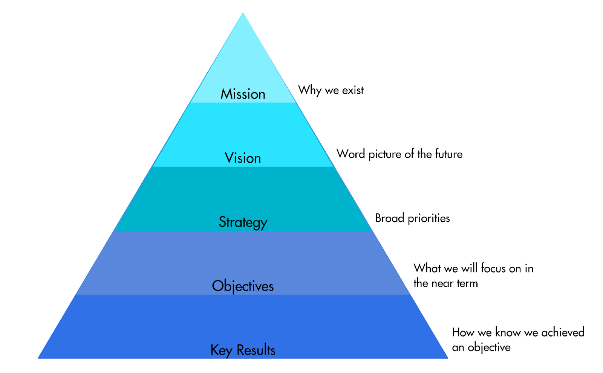

What is the OKR Framework about?
Popularized in 2013 by Rick Klau, Partner at Google Ventures Startup Lab, in renowned video Startup Lab workshop: How Google sets goals: OKRs, the OKR Framework (OKR stands for Objectives and Key Results) was initially designed by Silicon Valley legend Andy Grove, successful CEO of Intel Corporation from 1987 to 1998. Then, it was passed to Google’s founders through a former Intel’s employee who then became venture capitalist, John Doerr.
Widely inspired by the Management By Objectives system introduced by Peter Drucker, Andy Grove brought some modifications in order to answer two fundamental questions:
- Where do you want to go? (the objective)
- How will you pace ourselves to measure if you are getting there? (the key result)
As defined by Paul R. Niven and Ben Lamorte in the insightful book “Objectives and Key Results: Driving Focus, Alignment, and Engagement with OKRs,” “OKRs is a critical thinking framework and ongoing discipline that seeks to ensure employees work together, focusing their efforts to make measurable contributions that drive the company forward.” To put it shorter: OKRs is a way of making goals visible and measurable.
An objective is a statement that describes a broad qualitative goal. Always related to an objective, a key result is a statement that enables the measurement of the completion of a given objective. In general, 2 to 5 measurable key results are associated with an objective. The framework is usually cadenced in a 3-month cycle. At the end of every quarter, the achievement of past objectives is discussed, and new objectives and key results are decided.
Context for OKRs
Behind the OKR Framework, there is a radical new way of managing people called “Management by intent”. Instead of telling people how to achieve, you just tell them what to achieve and let them find the right way on their own.
How to roll out the OKR Framework in your organization successfully?
To construct an effective objective, you should meet a certain number of criteria. A powerful objective should be:
- Inspirational: To engage the team in something bigger than just running the business as usual;
- Attainable: Even though it is recommended to stretch the goals you set slightly, there is a risk of causing counterproductive effects with over-demanding objectives;
- Doable in a quarter: That is the typical cadence of OKRs. If you set a goal that obviously can’t be reached within the next 3 months, it might lose its driving power.
- Controllable by the team: Whoever sets the objective, the team must be fully able to control the outcome, meaning that it should possess all means to achieve it.
- Provide business value: That is an obvious criterion; however, it is essential to remind that objectives should create tangible value for the organization if attained.
- Qualitative: You should never introduce any numbers in an objective.
Like objectives, key results should meet some criteria to be effective. They should be:
- Quantitative: Key results are always quantitative so that you can use numbers to determine whether or not the goal was met;
- Aspirational: Ambitious yet attainable targets will foster the right level of motivation and energy in the team;
- Specific: Avoiding ambiguity will ensure shared understanding within and outside the team;
- Owned: Even if top management may inspire the strategy, OKRs should mostly originate from the team itself;
- Progress-Based: Following indicators that can be measured frequently, let’s say every two weeks, contributes to the team’s motivation;
- Vertically and horizontally aligned: The OKRs should be reviewed by both leaders and other teams you might depend on to ensure alignment at the organization level;
- Driving the right behavior: Before setting your objective, you should think twice about how it could trigger an unethical behavior among members of the team.
For scoring objectives, the OKR Framework suggests using a 0-1 scale:
- 1: This level corresponds to your stretch and ambitious goal with the objective to foster breakthrough thinking;
- 0.7: It represents a target difficult to reach while remaining achievable regarding your past performances;
- 0.3: It characterizes a “business as usual” target level that can be attained with no additional efforts or out-of-the-box ideas;
- 0: No progress.
Some tips from Itamar Gilad, ex-Google PM & Author
In an ebook recently published, OKRs Done Right, Itamar lists five OKR antipatterns that, of course, you should try to avoid:
- Using OKRs to express a plan (Output OKRs): As stated above, OKRs’ purpose is to favor management by intent. Goals are benefits you expect, not specific actions or features. Remember that you should let the team define the most relevant initiatives to attain those goals.
- Non-SMART Key Results: As a reminder, SMART stands for Specific, Measurable, Ambitious, Realistic, and Time-Bound. Here, the risk is to state too vague or unrealistic goals.
- Too Many OKRs: When it comes to OKRs, less is more. Running after too many goals inexorably reduces the team’s ability to focus on what matters the most. For a specific quarter, the recommended limits are three objectives and no more than five key results by objective.
- Top-Down OKRs With No Bottom-Up: Of course, top-down goals are less likely to get buy-in from the team. In addition to that, managers often lack the perspective, knowledge, and insight of the team members doing the work.
- Using OKR for performance evaluation: Although it may a priori appear to be a good idea, doing so can often trigger unexpected and unethical behaviors in a team, which can be highly damageable in the long run.
Suggested resources to become a master of the OKR Framework
- A short but insightful introduction to OKRs by Ryan Panchadsaram and Sam Prince, John Doerr’s collaborators: What is OKR? Definition and examples.
- A practical business case from Itamar Gilad, former Lead Product Manager and Head of Growth at Gmail: How OKR Helped Gmail Reach 1 Billion Users: an Interview with Itamar Gilad.
- The Rick Klau’s speech that makes OKRs famous across the world: Startup Lab workshop: How Google sets goals: OKRs.